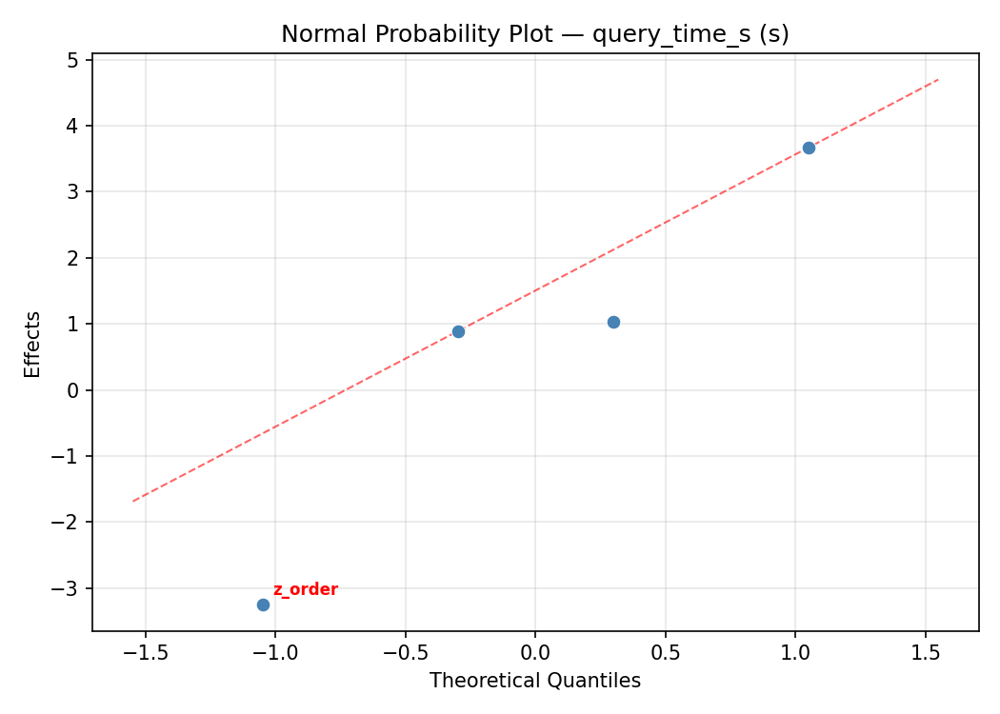
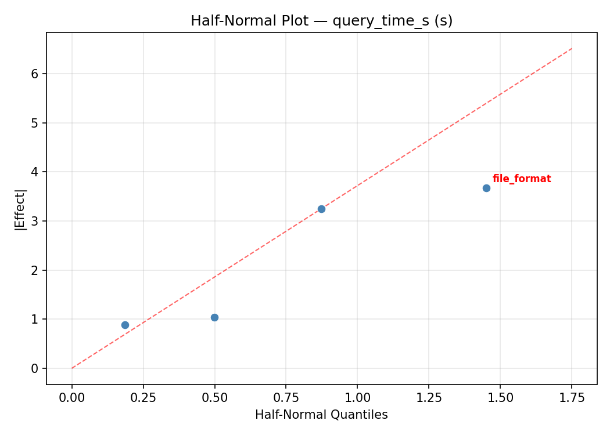
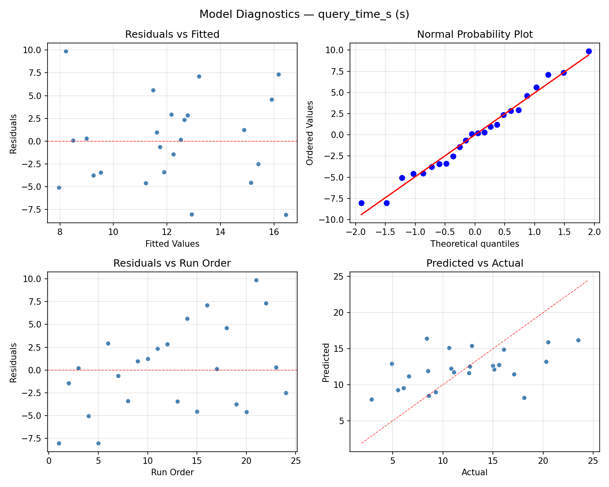
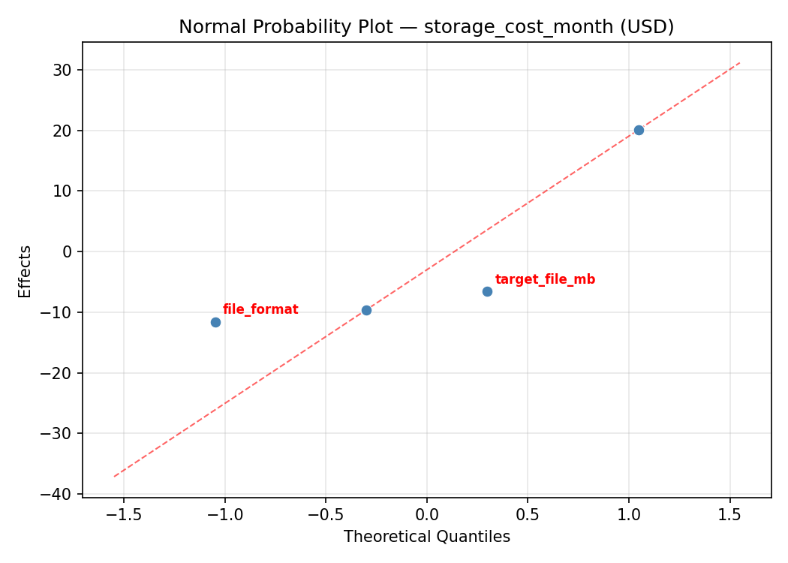
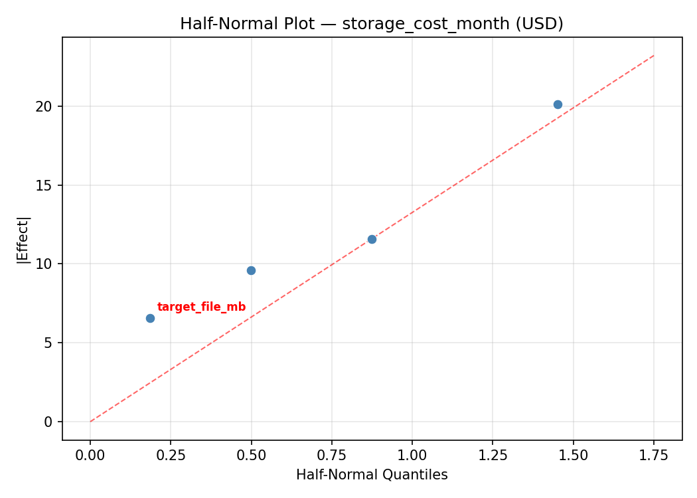
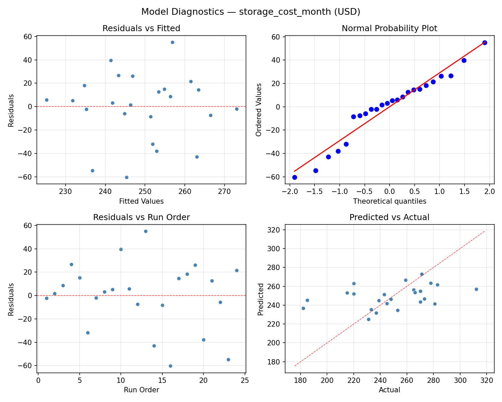

Summary
This experiment investigates data lake partitioning. Full factorial of partitioning strategy, file format, and compaction for query speed and storage cost.
The design varies 4 factors: partition cols, ranging from date to date_hour_region, file format, ranging from parquet to orc, target file mb (MB), ranging from 64 to 256, and z order, ranging from off to on. The goal is to optimize 2 responses: query time s (s) (minimize) and storage cost month (USD) (minimize). Fixed conditions held constant across all runs include table size tb = 5, retention days = 90.
A full factorial design was used to explore all 16 possible combinations of the 4 factors at two levels. This guarantees that every main effect and interaction can be estimated independently, at the cost of a larger experiment (24 runs).
Quadratic response surface models were fitted to capture potential curvature and factor interactions. The RSM contour plots below visualize how pairs of factors jointly affect each response.
Key Findings
For query time s, the most influential factors were partition cols (58.8%), file format (25.0%), target file mb (12.0%). The best observed value was 2.9 (at partition cols = date_hour, file format = parquet, target file mb = 256).
For storage cost month, the most influential factors were partition cols (74.4%), target file mb (13.7%), file format (9.4%). The best observed value was 182.0 (at partition cols = date_hour_region, file format = orc, target file mb = 256).
Recommended Next Steps
- Consider whether any fixed factors should be varied in a future study.
Experimental Setup
Factors
| Factor | Low | High | Unit |
|---|
partition_cols | date | date_hour_region | |
file_format | parquet | orc | |
target_file_mb | 64 | 256 | MB |
z_order | off | on | |
Fixed: table_size_tb = 5, retention_days = 90
Responses
| Response | Direction | Unit |
|---|
query_time_s | ↓ minimize | s |
storage_cost_month | ↓ minimize | USD |
Configuration
{
"metadata": {
"name": "Data Lake Partitioning",
"description": "Full factorial of partitioning strategy, file format, and compaction for query speed and storage cost"
},
"factors": [
{
"name": "partition_cols",
"levels": [
"date",
"date_hour",
"date_hour_region"
],
"type": "categorical",
"unit": ""
},
{
"name": "file_format",
"levels": [
"parquet",
"orc"
],
"type": "categorical",
"unit": ""
},
{
"name": "target_file_mb",
"levels": [
"64",
"256"
],
"type": "continuous",
"unit": "MB"
},
{
"name": "z_order",
"levels": [
"off",
"on"
],
"type": "categorical",
"unit": ""
}
],
"fixed_factors": {
"table_size_tb": "5",
"retention_days": "90"
},
"responses": [
{
"name": "query_time_s",
"optimize": "minimize",
"unit": "s"
},
{
"name": "storage_cost_month",
"optimize": "minimize",
"unit": "USD"
}
],
"settings": {
"operation": "full_factorial",
"test_script": "use_cases/38_data_lake_partitioning/sim.sh"
}
}
Experimental Matrix
The Full Factorial Design produces 24 runs. Each row is one experiment with specific factor settings.
| Run | partition_cols | file_format | target_file_mb | z_order |
|---|
| 1 | date_hour | orc | 256 | on |
| 2 | date | orc | 64 | on |
| 3 | date_hour_region | parquet | 256 | off |
| 4 | date_hour_region | orc | 256 | on |
| 5 | date_hour | orc | 64 | on |
| 6 | date_hour | parquet | 256 | off |
| 7 | date_hour_region | parquet | 64 | on |
| 8 | date_hour | parquet | 256 | on |
| 9 | date_hour | orc | 256 | off |
| 10 | date_hour_region | parquet | 64 | off |
| 11 | date | parquet | 64 | on |
| 12 | date_hour | orc | 64 | off |
| 13 | date_hour_region | orc | 64 | on |
| 14 | date | orc | 256 | off |
| 15 | date_hour | parquet | 64 | on |
| 16 | date | parquet | 256 | off |
| 17 | date_hour_region | orc | 256 | off |
| 18 | date | orc | 64 | off |
| 19 | date_hour_region | parquet | 256 | on |
| 20 | date | orc | 256 | on |
| 21 | date_hour | parquet | 64 | off |
| 22 | date | parquet | 64 | off |
| 23 | date | parquet | 256 | on |
| 24 | date_hour_region | orc | 64 | off |
Step-by-Step Workflow
1
Preview the design
$ python doe.py info --config use_cases/38_data_lake_partitioning/config.json
2
Generate the runner script
$ python doe.py generate --config use_cases/38_data_lake_partitioning/config.json \
--output use_cases/38_data_lake_partitioning/results/run.sh --seed 42
3
Execute the experiments
$ bash use_cases/38_data_lake_partitioning/results/run.sh
4
Analyze results
$ python doe.py analyze --config use_cases/38_data_lake_partitioning/config.json
5
Get optimization recommendations
$ python doe.py optimize --config use_cases/38_data_lake_partitioning/config.json
6
Multi-objective optimization
With 2 competing responses, use --multi to find the best compromise via Derringer–Suich desirability.
$ python doe.py optimize --config use_cases/38_data_lake_partitioning/config.json --multi
7
Generate the HTML report
$ python doe.py report --config use_cases/38_data_lake_partitioning/config.json \
--output use_cases/38_data_lake_partitioning/results/report.html
Features Exercised
| Feature | Value |
|---|
| Design type | full_factorial |
| Factor types | continuous (1), categorical (3) |
| Arg style | double-dash |
| Responses | 2 (query_time_s ↓, storage_cost_month ↓) |
| Total runs | 24 |
Analysis Results
Generated from actual experiment runs using the DOE Helper Tool.
Response: query_time_s
Top factors: partition_cols (58.8%), file_format (25.0%), target_file_mb (12.0%).
ANOVA
| Source | DF | SS | MS | F | p-value |
|---|
| Source | DF | SS | MS | F | p-value |
| partition_cols | 2 | 169.2925 | 84.6462 | 3.169 | 0.0711 |
| file_format | 1 | 44.2817 | 44.2817 | 1.658 | 0.2174 |
| target_file_mb | 1 | 10.1400 | 10.1400 | 0.380 | 0.5471 |
| z_order | 1 | 1.2150 | 1.2150 | 0.045 | 0.8340 |
| file_format*target_file_mb | 1 | 0.6017 | 0.6017 | 0.023 | 0.8827 |
| file_format*z_order | 1 | 30.8267 | 30.8267 | 1.154 | 0.2997 |
| target_file_mb*z_order | 1 | 16.3350 | 16.3350 | 0.611 | 0.4464 |
| Error | 15 | 400.7075 | 26.7138 | | |
| Total | 23 | 673.4000 | 29.2783 | | |
Pareto Chart

Main Effects Plot

Normal Probability Plot of Effects

Half-Normal Plot of Effects

Model Diagnostics

Response: storage_cost_month
Top factors: partition_cols (74.4%), target_file_mb (13.7%), file_format (9.4%).
ANOVA
| Source | DF | SS | MS | F | p-value |
|---|
| Source | DF | SS | MS | F | p-value |
| partition_cols | 2 | 5625.7500 | 2812.8750 | 3.992 | 0.0407 |
| file_format | 1 | 135.3750 | 135.3750 | 0.192 | 0.6674 |
| target_file_mb | 1 | 287.0417 | 287.0417 | 0.407 | 0.5329 |
| z_order | 1 | 9.3750 | 9.3750 | 0.013 | 0.9097 |
| file_format*target_file_mb | 1 | 315.3750 | 315.3750 | 0.448 | 0.5137 |
| file_format*z_order | 1 | 4676.0417 | 4676.0417 | 6.636 | 0.0211 |
| target_file_mb*z_order | 1 | 273.3750 | 273.3750 | 0.388 | 0.5427 |
| Error | 15 | 10570.2917 | 704.6861 | | |
| Total | 23 | 21892.6250 | 951.8533 | | |
Pareto Chart

Main Effects Plot

Normal Probability Plot of Effects

Half-Normal Plot of Effects

Model Diagnostics

Multi-Objective Optimization
When responses compete, Derringer–Suich desirability finds the best compromise.
Each response is scaled to a 0–1 desirability, then combined via a weighted geometric mean.
Overall Desirability
D = 0.7734
Per-Response Desirability
| Response | Weight | Desirability | Predicted | Dir |
|---|
query_time_s |
1.5 |
|
9.30 0.6721 9.30 s |
↓ |
storage_cost_month |
1.0 |
|
182.00 0.9545 182.00 USD |
↓ |
Recommended Settings
| Factor | Value |
|---|
partition_cols | date_hour_region |
file_format | orc |
target_file_mb | 64 MB |
z_order | on |
Source: from observed run #23
Trade-off Summary
Sacrifice = how much worse than single-objective best.
| Response | Predicted | Best Observed | Sacrifice |
|---|
storage_cost_month | 182.00 | 182.00 | +0.00 |
Top 3 Runs by Desirability
| Run | D | Factor Settings |
|---|
| #20 | 0.7635 | partition_cols=date_hour_region, file_format=orc, target_file_mb=256, z_order=on |
| #1 | 0.7469 | partition_cols=date, file_format=orc, target_file_mb=64, z_order=on |
Model Quality
| Response | R² | Type |
|---|
storage_cost_month | 0.2973 | linear |
Full Multi-Objective Output
============================================================
MULTI-OBJECTIVE OPTIMIZATION
Method: Derringer-Suich Desirability Function
============================================================
Overall desirability: D = 0.7734
Response Weight Desirability Predicted Direction
---------------------------------------------------------------------
query_time_s 1.5 0.6721 9.30 s ↓
storage_cost_month 1.0 0.9545 182.00 USD ↓
Recommended settings:
partition_cols = date_hour_region
file_format = orc
target_file_mb = 64 MB
z_order = on
(from observed run #23)
Trade-off summary:
query_time_s: 9.30 (best observed: 2.90, sacrifice: +6.40)
storage_cost_month: 182.00 (best observed: 182.00, sacrifice: +0.00)
Model quality:
query_time_s: R² = 0.1417 (linear)
storage_cost_month: R² = 0.2973 (linear)
Top 3 observed runs by overall desirability:
1. Run #23 (D=0.7734): partition_cols=date_hour_region, file_format=orc, target_file_mb=64, z_order=on
2. Run #20 (D=0.7635): partition_cols=date_hour_region, file_format=orc, target_file_mb=256, z_order=on
3. Run #1 (D=0.7469): partition_cols=date, file_format=orc, target_file_mb=64, z_order=on
Full Analysis Output
=== Main Effects: query_time_s ===
Factor Effect Std Error % Contribution
--------------------------------------------------------------
partition_cols 6.3875 1.1045 58.8%
file_format 2.7167 1.1045 25.0%
target_file_mb -1.3000 1.1045 12.0%
z_order -0.4500 1.1045 4.1%
=== ANOVA Table: query_time_s ===
Source DF SS MS F p-value
-----------------------------------------------------------------------------
partition_cols 2 169.2925 84.6462 3.169 0.0711
file_format 1 44.2817 44.2817 1.658 0.2174
target_file_mb 1 10.1400 10.1400 0.380 0.5471
z_order 1 1.2150 1.2150 0.045 0.8340
file_format*target_file_mb 1 0.6017 0.6017 0.023 0.8827
file_format*z_order 1 30.8267 30.8267 1.154 0.2997
target_file_mb*z_order 1 16.3350 16.3350 0.611 0.4464
Error 15 400.7075 26.7138
Total 23 673.4000 29.2783
=== Interaction Effects: query_time_s ===
Factor A Factor B Interaction % Contribution
------------------------------------------------------------------------
file_format z_order 2.2667 53.5%
target_file_mb z_order 1.6500 39.0%
file_format target_file_mb -0.3167 7.5%
=== Summary Statistics: query_time_s ===
partition_cols:
Level N Mean Std Min Max
------------------------------------------------------------
date 8 12.9125 2.9849 8.4000 17.1000
date_hour 8 8.6500 4.7970 2.9000 18.1000
date_hour_region 8 15.0375 6.3320 4.9000 23.5000
file_format:
Level N Mean Std Min Max
------------------------------------------------------------
orc 12 10.8417 5.3498 2.9000 20.5000
parquet 12 13.5583 5.3453 6.1000 23.5000
target_file_mb:
Level N Mean Std Min Max
------------------------------------------------------------
256 12 12.8500 6.4456 2.9000 23.5000
64 12 11.5500 4.3301 4.9000 18.1000
z_order:
Level N Mean Std Min Max
------------------------------------------------------------
off 12 12.4250 5.7449 2.9000 20.5000
on 12 11.9750 5.3013 4.9000 23.5000
=== Main Effects: storage_cost_month ===
Factor Effect Std Error % Contribution
--------------------------------------------------------------
partition_cols 37.5000 6.2977 74.4%
target_file_mb 6.9167 6.2977 13.7%
file_format 4.7500 6.2977 9.4%
z_order -1.2500 6.2977 2.5%
=== ANOVA Table: storage_cost_month ===
Source DF SS MS F p-value
-----------------------------------------------------------------------------
partition_cols 2 5625.7500 2812.8750 3.992 0.0407
file_format 1 135.3750 135.3750 0.192 0.6674
target_file_mb 1 287.0417 287.0417 0.407 0.5329
z_order 1 9.3750 9.3750 0.013 0.9097
file_format*target_file_mb 1 315.3750 315.3750 0.448 0.5137
file_format*z_order 1 4676.0417 4676.0417 6.636 0.0211
target_file_mb*z_order 1 273.3750 273.3750 0.388 0.5427
Error 15 10570.2917 704.6861
Total 23 21892.6250 951.8533
=== Interaction Effects: storage_cost_month ===
Factor A Factor B Interaction % Contribution
------------------------------------------------------------------------
file_format z_order 27.9167 66.6%
file_format target_file_mb -7.2500 17.3%
target_file_mb z_order 6.7500 16.1%
=== Summary Statistics: storage_cost_month ===
partition_cols:
Level N Mean Std Min Max
------------------------------------------------------------
date 8 249.3750 20.9280 220.0000 281.0000
date_hour 8 267.7500 28.3637 215.0000 312.0000
date_hour_region 8 230.2500 32.8840 182.0000 271.0000
file_format:
Level N Mean Std Min Max
------------------------------------------------------------
orc 12 246.7500 30.9813 182.0000 283.0000
parquet 12 251.5000 31.9075 185.0000 312.0000
target_file_mb:
Level N Mean Std Min Max
------------------------------------------------------------
256 12 245.6667 38.9903 182.0000 312.0000
64 12 252.5833 21.0690 220.0000 283.0000
z_order:
Level N Mean Std Min Max
------------------------------------------------------------
off 12 249.7500 30.0518 185.0000 281.0000
on 12 248.5000 32.9587 182.0000 312.0000
Optimization Recommendations
=== Optimization: query_time_s ===
Direction: minimize
Best observed run: #4
partition_cols = date_hour
file_format = parquet
target_file_mb = 256
z_order = on
Value: 2.9
RSM Model (linear, R² = 0.0739, Adj R² = -0.1211):
Coefficients:
intercept +12.2000
partition_cols -0.7438
file_format -0.8917
target_file_mb -0.9250
z_order -0.2333
RSM Model (quadratic, R² = 0.3481, Adj R² = -0.6659):
Coefficients:
intercept +3.5594
partition_cols -0.7438
file_format -0.8917
target_file_mb -0.9250
z_order -0.2333
partition_cols*file_format -1.1688
partition_cols*target_file_mb -0.0688
partition_cols*z_order +1.4813
file_format*target_file_mb -0.1833
file_format*z_order +0.3417
target_file_mb*z_order +1.7583
partition_cols^2 -3.0562
file_format^2 +3.5594
target_file_mb^2 +3.5594
z_order^2 +3.5594
Curvature analysis:
target_file_mb coef=+3.5594 convex (has a minimum)
z_order coef=+3.5594 convex (has a minimum)
file_format coef=+3.5594 convex (has a minimum)
partition_cols coef=-3.0562 concave (has a maximum)
Notable interactions:
target_file_mb*z_order coef=+1.7583 (synergistic)
partition_cols*z_order coef=+1.4813 (synergistic)
partition_cols*file_format coef=-1.1688 (antagonistic)
file_format*z_order coef=+0.3417 (synergistic)
Predicted optimum (from linear model, at observed points):
partition_cols = date
file_format = orc
target_file_mb = 64
z_order = off
Predicted value: 14.9938
Surface optimum (via L-BFGS-B, linear model):
partition_cols = date_hour
file_format = orc
target_file_mb = 256
z_order = on
Predicted value: 9.4062
Model quality: Weak fit — consider adding center points or using a different design.
Factor importance:
1. partition_cols (effect: 3.8, contribution: 48.1%)
2. target_file_mb (effect: 1.8, contribution: 23.4%)
3. file_format (effect: -1.8, contribution: 22.6%)
4. z_order (effect: -0.5, contribution: 5.9%)
=== Optimization: storage_cost_month ===
Direction: minimize
Best observed run: #23
partition_cols = date_hour_region
file_format = orc
target_file_mb = 256
z_order = off
Value: 182.0
RSM Model (linear, R² = 0.1806, Adj R² = 0.0081):
Coefficients:
intercept +249.1250
partition_cols -9.5000
file_format +2.2083
target_file_mb +7.5417
z_order -6.5417
RSM Model (quadratic, R² = 0.6021, Adj R² = -0.0168):
Coefficients:
intercept +62.6562
partition_cols -9.5000
file_format +2.2083
target_file_mb +7.5417
z_order -6.5417
partition_cols*file_format +10.0000
partition_cols*target_file_mb -13.3750
partition_cols*z_order +4.3750
file_format*target_file_mb +12.1250
file_format*z_order -3.6250
target_file_mb*z_order -4.9583
partition_cols^2 -2.2500
file_format^2 +62.6562
target_file_mb^2 +62.6562
z_order^2 +62.6562
Curvature analysis:
target_file_mb coef=+62.6562 convex (has a minimum)
z_order coef=+62.6562 convex (has a minimum)
file_format coef=+62.6562 convex (has a minimum)
partition_cols coef=-2.2500 concave (has a maximum)
Notable interactions:
partition_cols*target_file_mb coef=-13.3750 (antagonistic)
file_format*target_file_mb coef=+12.1250 (synergistic)
partition_cols*file_format coef=+10.0000 (synergistic)
target_file_mb*z_order coef=-4.9583 (antagonistic)
partition_cols*z_order coef=+4.3750 (synergistic)
file_format*z_order coef=-3.6250 (antagonistic)
Predicted optimum (from linear model, at observed points):
partition_cols = date
file_format = parquet
target_file_mb = 256
z_order = off
Predicted value: 274.9167
Surface optimum (via L-BFGS-B, linear model):
partition_cols = date_hour
file_format = parquet
target_file_mb = 64
z_order = on
Predicted value: 223.3333
Model quality: Weak fit — consider adding center points or using a different design.
Factor importance:
1. partition_cols (effect: 19.0, contribution: 36.8%)
2. target_file_mb (effect: -15.1, contribution: 29.2%)
3. z_order (effect: -13.1, contribution: 25.4%)
4. file_format (effect: 4.4, contribution: 8.6%)